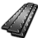
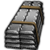
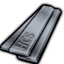
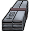
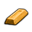
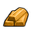
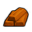

stuffProps 里含 Metallic/StrongMetallic/RuggedMetallic/… —— 能在工作台/建筑里当材质选用;组内按"能顶替到哪档金属"排
原始Vile本地补丁×1代钢级·原始·熟铁WroughtIron
代钢级可塑成品 940 件:家具建筑647 · 防具142 · 穿戴件40 · 近战工具96 · 远程武器7 · 其它8
金属全谱469 + 常规硬性件328 + 重机电(舱体/发电机/扫描仪)143
顶替 整档替到 代钢级·中世纪·青铜(940 件基准,含其下全部金属);比钢 +0/−1 件 —— 做不了 无菌瓦屋顶
 生效·AVile's Metallurgy
生效·AVile's Metallurgy
生效·BVile's Metallurgy
生效·CVile's MetallurgyThings/Item/WroughtIron StackCount (97,108,138)被4条配方消耗
护甲 0.75/0.75/0.08 利钝 0.80/1 价值 0.8 质量 0.35 Bulk 0.35
stuff ForgedMetallic, Metallic, RuggedMetallic, StrongMetallic
HSK SLDBar, ForgedBar
产自 Forge Wrought Iron from bloom (x15)(锻造厂) ; Forge wrought iron from pig iron (x30)(锻造厂)
源 Vile's Metallurgy
Alloys_Medieval_Ferrous.xml
中世纪Vile上游补丁×1代钢级·中世纪·坩埚钢CrucibleSteel
代钢级可塑成品 944 件:家具建筑651 · 防具142 · 穿戴件40 · 近战工具96 · 远程武器7 · 其它8
金属全谱469 + 常规硬性件328 + 重机电(舱体/发电机/扫描仪)143 + 耐腐蚀设备4
顶替 整档替到 代钢级·中世纪·青铜(940 件基准,含其下全部金属);比钢 +4/−1 件 —— 做不了 无菌瓦屋顶;钢做不了它能做 化学工作站、水冷装置…
 生效·AVile's Metallurgy
生效·AVile's Metallurgy
生效·BVile's Metallurgy
生效·CVile's MetallurgyThings/Item/HCS StackCount (180,188,200)(180,188,200)被1条配方消耗
护甲 0.90/0.90/0.08 利钝 1.10/1 价值 1.5 质量 0.35 Bulk 0.35
stuff CastMetallic, CorrosionResistant, ForgedMetallic, Metallic, RuggedMetallic, StrongMetallic
HSK SLDBar, ForgedBar, CastBar
产自 Make Crucible Steel (x80)(铸造厂/Advanced Steel III)
源 Vile's Metallurgy
Alloys_Medieval_Ferrous.xml
中世纪HSKVile上游补丁×3代钢级·中世纪·青铜Bronze
代钢级可塑成品 940 件:家具建筑647 · 防具142 · 穿戴件40 · 近战工具96 · 远程武器7 · 其它8
金属全谱469 + 常规硬性件328 + 重机电(舱体/发电机/扫描仪)143
顶替 整档替到 强化工程级·电力工业·纯钛（Ti）(798 件基准,含其下全部金属);比钢 +0/−1 件 —— 做不了 无菌瓦屋顶
② Vile 换成 Things/Item/BronzeIngot ← Core_SK_Overlap.xml

AVile's Metallurgy
BVile's MetallurgyCVile's Metallurgy③ 生效(终态) Things/Item/BronzeIngot (210,140,20)
 AVile's Metallurgy
AVile's Metallurgy
BVile's MetallurgyCVile's MetallurgyThings/Item/BronzeIngot StackCount (210,140,20)(210,140,20)被1条配方消耗贴图链 3 段
护甲 0.70/0.80/0.06 利钝 0.90/1.20 价值 2 质量 0.40 Bulk 0.35
stuff CastMetallic, Metallic, RuggedMetallic, StrongMetallic
HSK SLDBar, CastBar
产自 Smelt bronze (x25)(火坑, 高炉/Metallurgy I - Bronze Age) ; Smelt bronze (x75)(铸造厂/Metallurgy I - Bronze Age) ; Make bronze x25(感应炉, 金属提炼厂/Metal processing II)
源 Core_SK + Vile's Metallurgy
Alloys_Medieval_NonFerrous.xml ; Items_Resource_Alloys_Medieval.xml